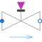

ValveDiscreteValve for water/steam flows with linear pressure drop |

|
Information
This information is part of the Modelica Standard Library maintained by the Modelica Association.
This very simple model provides a (small) pressure drop which is proportional to the flowrate if the Boolean open signal is true. Otherwise, the mass flow rate is zero. If opening_min > 0, a small leakage mass flow rate occurs when open = false.
This model can be used for simplified modelling of on-off valves, when it is not important to accurately describe the pressure loss when the valve is open. Although the medium model is not used to determine the pressure loss, it must be nevertheless be specified, so that the fluid ports can be connected to other components using the same medium model.
The model is adiabatic (no heat losses to the ambient) and neglects changes in kinetic energy from the inlet to the outlet.
In a diagram animation, the valve is shown in "green", when it is open.
Parameters (10)
| allowFlowReversal |
Value: system.allowFlowReversal Type: Boolean Description: = true to allow flow reversal, false restricts to design direction (port_a -> port_b) |
|---|---|
| dp_start |
Value: 0.01 * system.p_start Type: AbsolutePressure (Pa) Description: Guess value of dp = port_a.p - port_b.p |
| m_flow_start |
Value: system.m_flow_start Type: MassFlowRate (kg/s) Description: Guess value of m_flow = port_a.m_flow |
| m_flow_small |
Value: if system.use_eps_Re then system.eps_m_flow * system.m_flow_nominal else system.m_flow_small Type: MassFlowRate (kg/s) Description: Small mass flow rate for regularization of zero flow |
| show_T |
Value: true Type: Boolean Description: = true, if temperatures at port_a and port_b are computed |
| show_V_flow |
Value: true Type: Boolean Description: = true, if volume flow rate at inflowing port is computed |
| dp_nominal |
Value: Type: AbsolutePressure (Pa) Description: Nominal pressure drop at full opening=1 |
| m_flow_nominal |
Value: Type: MassFlowRate (kg/s) Description: Nominal mass flowrate at full opening=1 |
| k |
Value: m_flow_nominal / dp_nominal Type: HydraulicConductance (kg/(s·Pa)) Description: Hydraulic conductance at full opening=1 |
| opening_min |
Value: 0 Type: Real Description: Remaining opening if closed, causing small leakage flow |
Connectors (3)
| port_a |
Type: FluidPort_a Description: Fluid connector a (positive design flow direction is from port_a to port_b) |
|
|---|---|---|
| port_b |
Type: FluidPort_b Description: Fluid connector b (positive design flow direction is from port_a to port_b) |
|
| open |
Type: BooleanInput |
Components (3)
| system |
Type: System Description: System wide properties |
|
|---|---|---|
| state_a |
Type: ThermodynamicState Description: state for medium inflowing through port_a |
|
| state_b |
Type: ThermodynamicState Description: state for medium inflowing through port_b |
Used in Examples (4)
|
Modelica.Fluid.Examples.ControlledTankSystem
Demonstrating the controller of a tank filling/emptying system |
|
|
Modelica.Fluid.Examples.AST_BatchPlant |
|
|
Modelica.Fluid.Examples.AST_BatchPlant.Test
Demonstrates a tank with one constant top inlet mass flow rate and a bottom outlet into the ambient |
|
|
Modelica.Fluid.Examples.AST_BatchPlant.Test
Demonstrates a tank with one constant top inlet mass flow rate and a bottom outlet into the ambient |